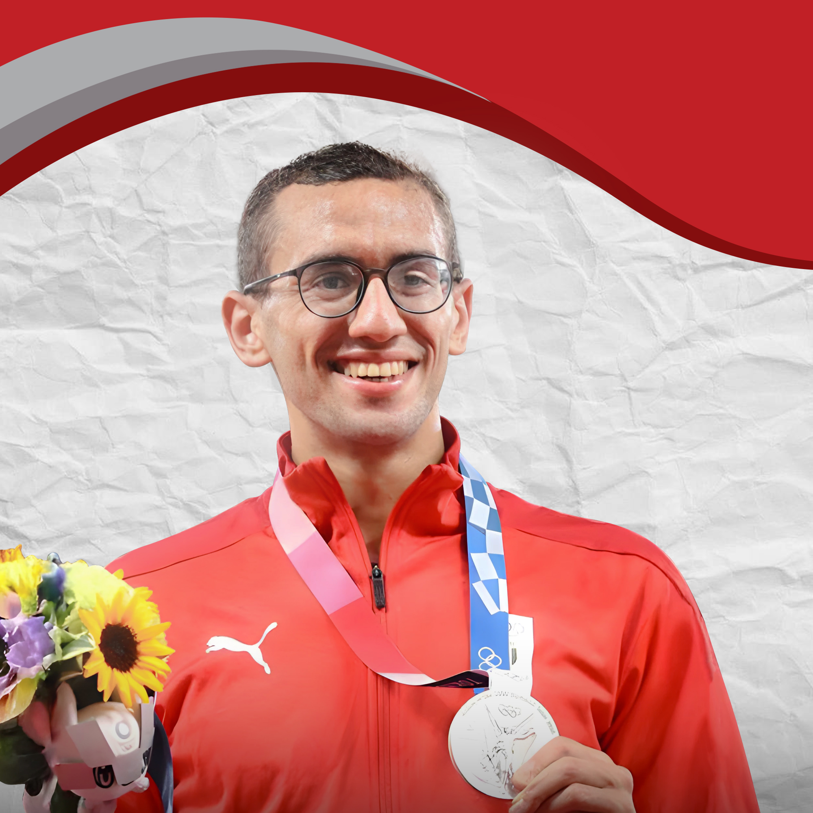
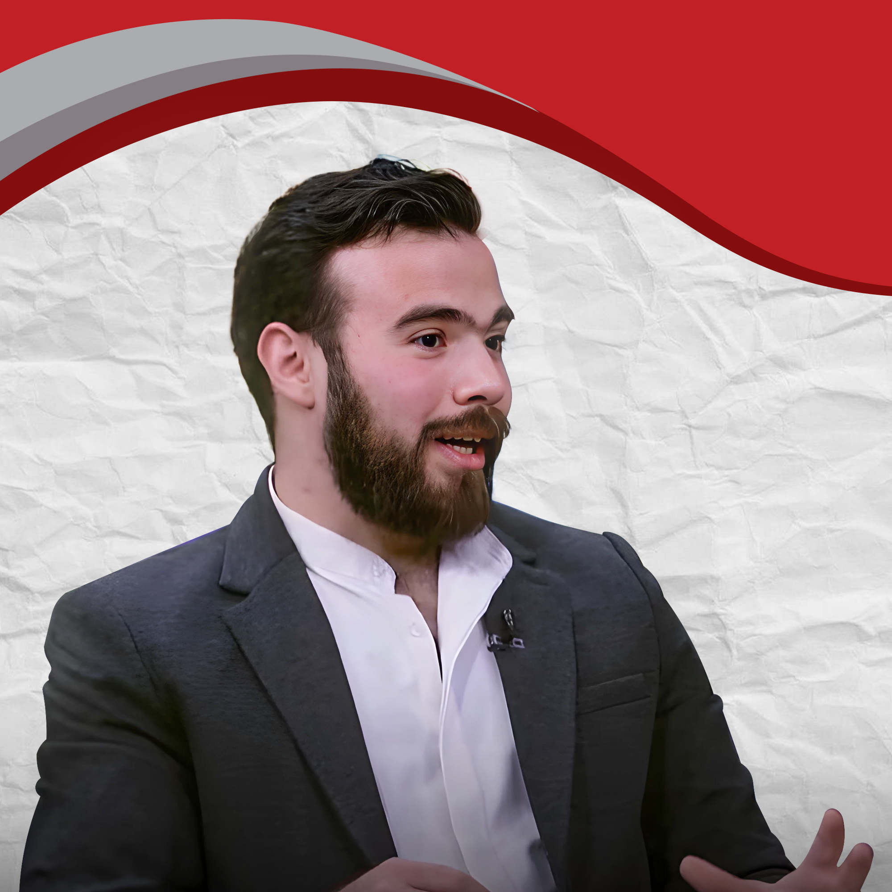
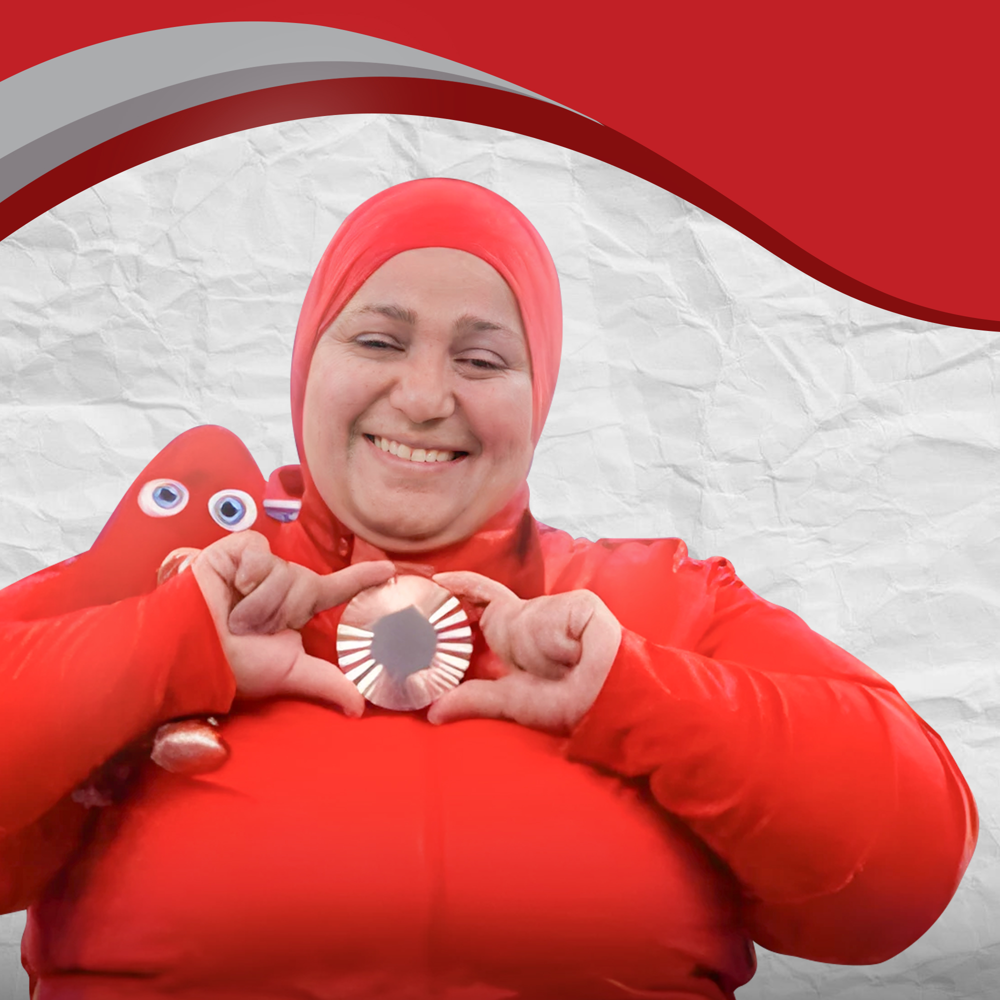

قصص النجاح والبطولات
تظهر لنا قصص نجاح الكثير من الشخصيات الملهمة أن الطريق إلى القمة ليس مفروشًا بالورود. وأن الفشل والتحديات قد تكون حجر الأساس للنجاح
حيث إننا في رحلة الحياة، نلتقي بقصصٍ ملهمة تُعيد لنا الأمل، وتُلهمنا لتحقيق أحلامنا. وهي قصصٌ لأشخاصٍ واجهوا تحدياتٍ جسامًا. وتخطوا عقباتٍ ظن الكثيرون أنها مستحيلة، ليصلوا إلى قمة النجاح

حقق "أحمد الجندي": لاعب منتخب مصر في الخماسي الحديث، إنجازًا تاريخيًا بكسره الرقم العالمي وفوزه بالميدالية الذهبية في أولمبياد باريس 2024.
تمكن الجندي من تحقيق 1555 نقطة، محطمًا الرقم العالمي السابق الذي بلغ 1551 نقطة، ليحقق بذلك الميدالية الذهبية بعد حصوله على الميدالية الفضية في أولمبياد طوكيو 2020.
كما نجح الجندي، في كسر الرقم الأولمبي بتسجيله 1516 نقطة، بعد انتهاء منافسات يوم الجمعة. واحتل الياباني تايشو ساتو المركز الثاني خلف البطل المصري بـ 1542 نقطة.
بهذا الفوز، حصل الجندي على أول ميدالية ذهبية لمصر في أولمبياد باريس 2024، وهي الميدالية الثالثة لمصر في هذه الدورة بعد فضية سارة سمير في رفع الأثقال وبرونزية محمد السيد في سلاح المبارزة إيبيه.
حقق الجندي أيضا في أولمبياد طوكيو 2020، إنجازًا تاريخيًا لمصر بفوزه بالميدالية الفضية في مسابقة الخماسي الحديث.
كان هذا الفوز هو الأول لمصر في هذه الرياضة على المستوى الأولمبي، ما جعله لحظة فارقة في تاريخ الرياضة المصرية.
لم يكن هذا الإنجاز وليد الصدفة، بل كان نتيجة لسنوات من التدريب المكثف والاستعداد البدني والنفسي، وقدم أحمد أداءً متميزًا في جميع المنافسات وكان قريبًا من الفوز بالميدالية الذهبية، لكنه اكتفى بالمركز الثاني بعد منافسة مع أبطال العالم

المهندس "باهي أحمد النسر":صاحب فضية جنيف للاختراعات صممت روبوت لإعادة تأهيل المرضى بالعلاج الطبيعي ،حصل على براءة اختراع في مصر لاختراعه "الرئيس التنفيذي" لإحدى الشركات التي تقدم أجهزة لإعادة التأهيل الحركي للمصابين بإعاقات حركية،إن الشركة تسعى لتطوير مجال العلاج الطبيعي باستخدام الروبوتات لإعادة التأهيل تساعد الأطباء في تأهيل المرضى بالعلاج الطبيعي ونستهدف تحول دور الطبيب إلى التشخيص والرقابة ويعمل على صناعة المركبات صديقة البيئة بدلا من المركبات الملوثة للبيئة

وحققت البطلة المصرية "نادية فكري":، إنجازات تاريخية على مدى أكثر من ال 25 عامًا، وبدأت مشوارها في رفع الأثقال وهي في سن الـ 12 بعد أن بدأت بممارسه السباحة،حققت ثلاث ميداليات بارالمبية برونزية في سيدني 2002 وكانت انطلاقتها الحقيقية سنة 1997 كما أنها استمرت في تحدي كل الظروف لتحقق ميدالية باريس ، لتتمكن من حصد الميدالية السابعة لمصر في بارالمبياد باريس 2024 وهي زوجة البطل المصري البرالمبي "صلاح عطا"وأم لولدين